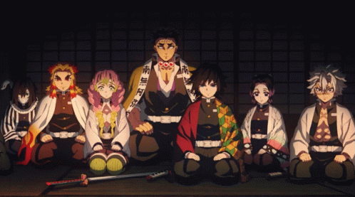

Demon Slayer
Miről szól a történet?
A Demon Slayer Tanjiro Kamado életét követi nyomon, aki egy kedves, szorgalmas fiú. Egy nap, amikor távol van otthonról, démonok lemészárolják a családját. Egyetlen túlélője a húga, Nezuko, aki sajnos démonná válik. Bár elveszíti emberi mivoltának nagy részét, mégis megmarad benne valami az emberségből, és próbálja megvédeni testvérét.
Tanjiro elhatározza, hogy képes lesz visszaadni húgának az emberi alakját. Ezért csatlakozik a Démonölő Hadosztályhoz, ahol kemény kiképzést kap. Nem csak démonokkal kell megküzdenie, hanem saját félelmeivel és fájdalmával is.

Miért számít komoly sorozatnak?
A Demon Slayer a látványos harcok mellett mély érzelmekre is épít. A szereplők gyakran kerülnek élet-halál helyzetbe, és nem mindenki éli túl. A sorozat fő üzenetei a kitartás, a bátorság, és az, hogy soha ne adjuk fel – még akkor sem, amikor minden reménytelennek tűnik.
A démonokról sem egyszerűen mint gonosz lényekről derül ki minden: soknak tragikus múltja van. Ez árnyaltabbá teszi a történetet, hiszen néha azok a legszörnyűbbek, akiket valaha valami szörnyűség tett azzá.

Főbb témák és mondanivaló
A sorozat erősen fókuszál a család fontosságára és arra, hogy az emberek képesek változni jó és rossz irányba is. A testvéri szeretet Tanjiro és Nezuko kapcsolatában nagy szerepet kap. Emellett a történet rávilágít arra is, hogy a keménység és a brutalitás mögött gyakran mélyen emberi érzések rejtőznek.
A Demon Slayer azt mutatja be, hogy a hősök nem attól lesznek hősök, mert erősek, hanem mert képesek harcolni akkor is, amikor félnek.

Szereplők és világ
A Demon Slayer világa tele van egyedi karakterekkel. A Démonölő Hadosztály tagjai mind különböző harcstílusokat használnak, amelyeket a lélegzéstechnikáik határoznak meg. Ezek a stílusok vizuálisan látványosak, és mindegyik egyedi hangulatot teremt.
Tanjiro mellett fontos szereplő még Zenitsu, aki gyáva, de erős, valamint Inosuke, aki vad és ösztönös harcos. Mindannyian más személyiséget és humort visznek a történetbe, miközben a komoly hangulat is megmarad.

Ezt az oldalt csinálta: Farkas Péter és Flezsár Titanilla